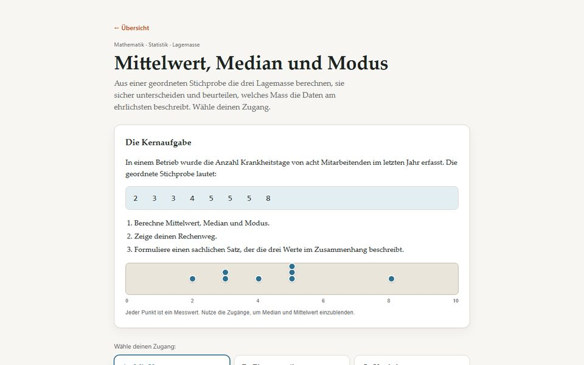
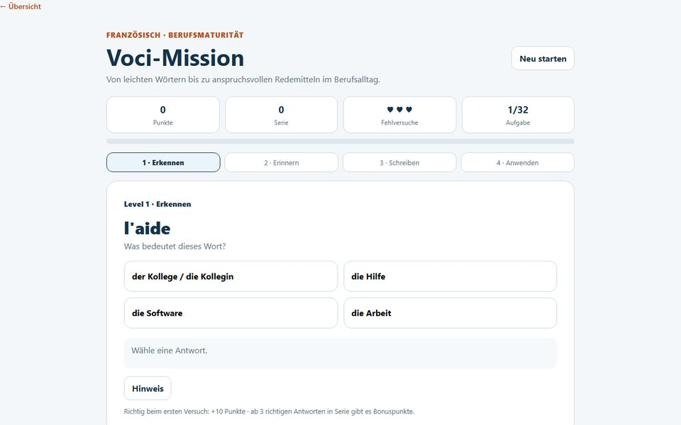
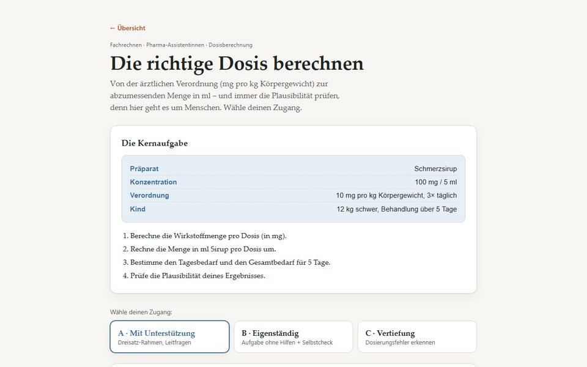
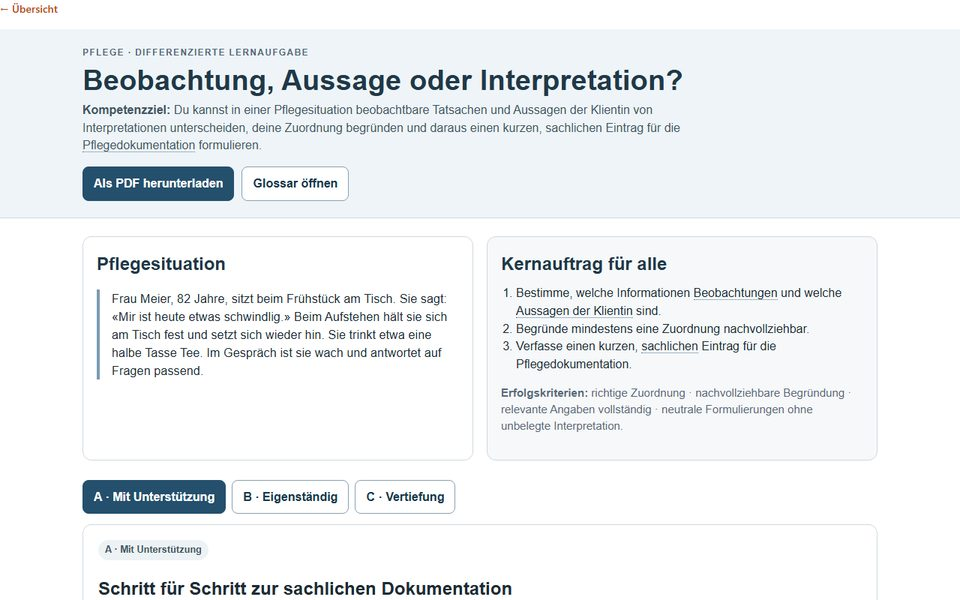
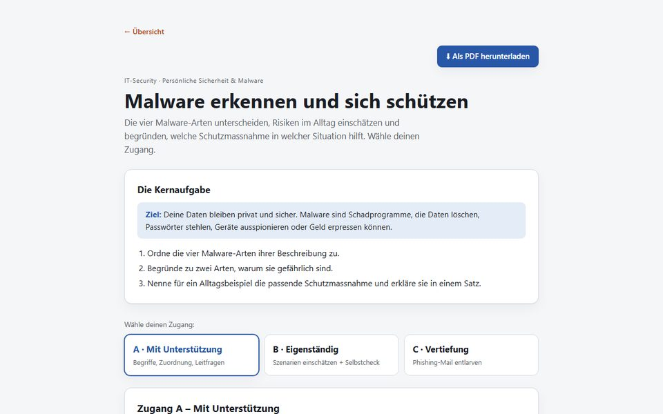
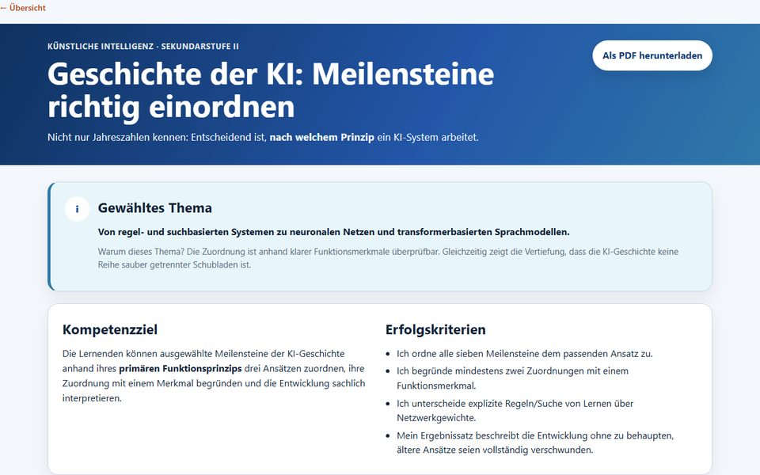

Für Lehrpersonen in der Schweiz
Aus deinem Unterrichtsmaterial entsteht eine interaktive Lernseite mit drei Zugängen A, B und C, Selbstkontrolle für die Lernenden und Lösungen für dich. Eine Datei, offline nutzbar, als Word und für Moodle.
«Produkt ohne Prozess stirbt.»
Technik wird erst dann Unterricht, wenn sie didaktisch strukturiert und einbettbar ist. Deshalb bauen Lernseiten auf Differenzierung, Selbstkontrolle und einem Arbeitsauftrag auf, nicht auf einem Chatfenster.
Was Lernwege ist
Interaktive Lernseiten und KI-Bilder mit Lernauftrag. Beides aus dem Material, das du schon hast.
Ein Thema, drei Wege: A mit Unterstützung, B Standard, C Vertiefung. Jede Aufgabe mit Selbstkontrolle und sofortiger Rückmeldung, für die Lehrperson ein ausklappbarer Bereich mit Lösungen.
Jede Seite ist eine einzelne HTML-Datei. Sie läuft lokal und ohne Internet, in Teams, per Freigabelink mit QR-Code oder als SCORM-Paket in Moodle. Dazu ein Word-Arbeitsblatt zum Drucken und Anpassen.
Lernziel und Bildbeschreibung rein, Prompt und Arbeitsauftrag raus. Mit Stolperstein-Check und Vier-Satz-Planung. Das Bild selbst erzeugst du im geschützten Bereich oder in deinem eigenen Bildwerkzeug.
Eigene Sammlung mit Suche und Filter nach Fach und Stufe. Lernseiten nur für dich, für deine Schule oder im gemeinsamen Pool freigeben. Die KI wählst du pro Seite: Claude, ChatGPT oder ein Open-Source-Modell bei Infomaniak mit Verarbeitung in der Schweiz.
So entsteht eine Seite
Im geschützten Bereich direkt, oder kostenlos mit dem Prompt-Generator und deinem eigenen KI-Chat.
01
PDF, Word, Foliensatz oder eine kurze Themenbeschreibung. Mehr braucht es nicht.
02
Fach, Stufe und die didaktischen Achsen: Differenzierungsart, Sprache, Twist-Typ, Niveau.
03
Die KI baut die Lernseite mit den drei Zugängen, Selbstkontrolle und Lösungen. Dauert wenige Minuten.
04
Als HTML herunterladen, per Link oder QR-Code teilen, in Moodle laden oder als Word drucken.
Beispiele
Alle mit dem Prompt-Generator und eigenem Material entstanden. Öffnen, ausprobieren, als Vorlage für das eigene Fach nehmen.

Mathematik · Berufsmaturität
Lagemasse berechnen und beurteilen, welches Mass die Daten am ehrlichsten beschreibt.

Französisch · Spiel
Vokabeltraining in vier Levels: erkennen, erinnern, schreiben, anwenden. Mit Punkten und Serie.

Pharma-Assistenz
Von mg/kg zur ml-Menge. Vertiefung: Dosierungsfehler erkennen, bevor sie zur Kundschaft gelangen.

Pflege
Beobachtung, Aussage oder Interpretation? Formulierungen unterscheiden und korrekt dokumentieren.

IT-Sicherheit
Malware-Arten zuordnen, Szenarien einschätzen. Vertiefung: eine Phishing-Mail entlarven.

Künstliche Intelligenz
Meilensteine einordnen. Vertiefung: nach welchem Prinzip ein System arbeitet.
Bilder für Lernaufgaben
KI-Bilder mit Lernziel, Prompt und Arbeitsauftrag. Alle fiktiv und als solche gekennzeichnet.
Werkzeuge
Die Generatoren bauen den Prompt. Den schickst du mit deinem Material an deinen KI-Chat. Wer es ohne Umweg will, erzeugt die Seite im geschützten Bereich.
Vier didaktische Achsen und Schnellstart-Vorlagen für Mathematik BM, Pharma, IT-Security und DaZ. Prompt kopieren, im eigenen KI-Chat verwenden.
Öffnen · Basis-Version · TextvorlageBilder für Lernaufgaben beschreiben: Lernziel, Motiv, Bildaufbau, Anforderungen. Mit Arbeitsauftrag und Stolperstein-Check.
ÖffnenMaterial hochladen, Achsen wählen, fertige Lernseite erhalten. Mit Sammlung, Freigabelink, Word- und Moodle-Export und Bildern direkt auf der Plattform.
Zugang & PreiseZugang
CHF 8 im Monat oder CHF 60 im Jahr. So viel wie ein Kaffee.
Zugänge für alle Lehrpersonen einer Institution auf Rechnung. Anmeldung mit dem Microsoft-365-Schulkonto, Teilen nur innerhalb der eigenen Schule.
Angebot anfragen